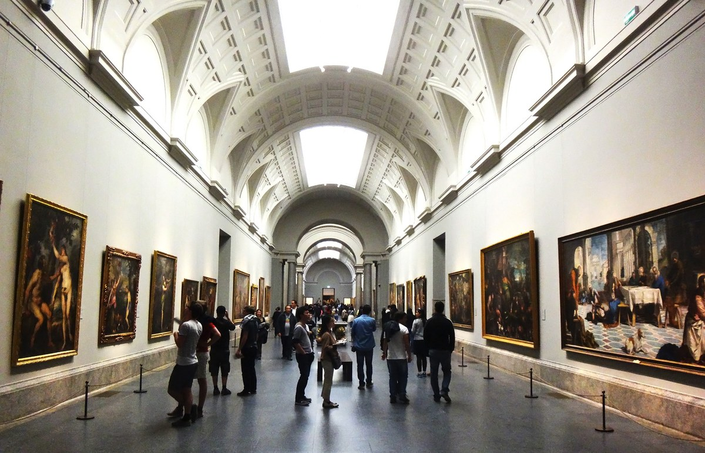
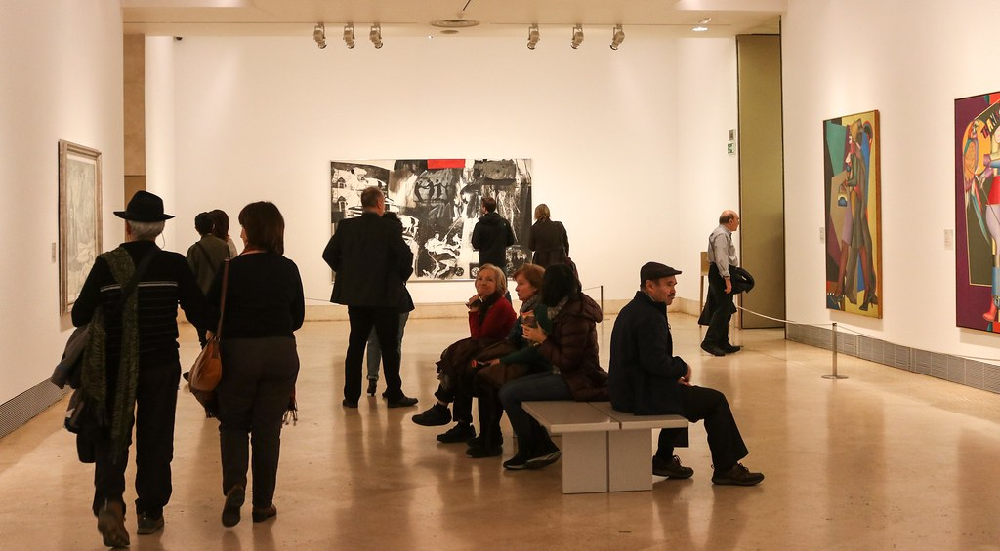
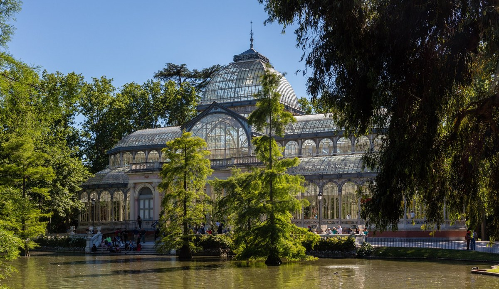
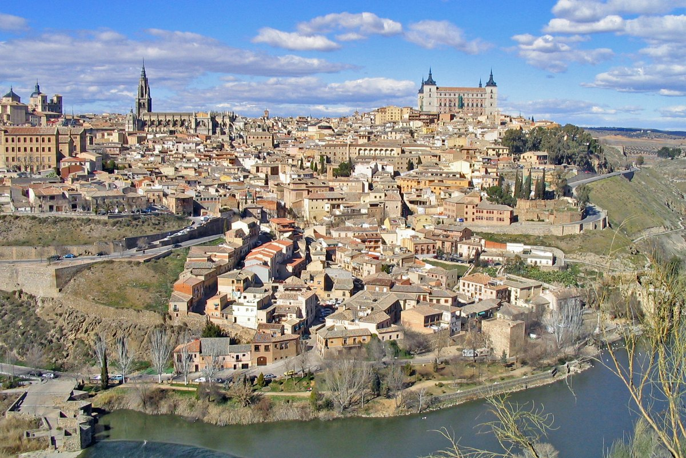
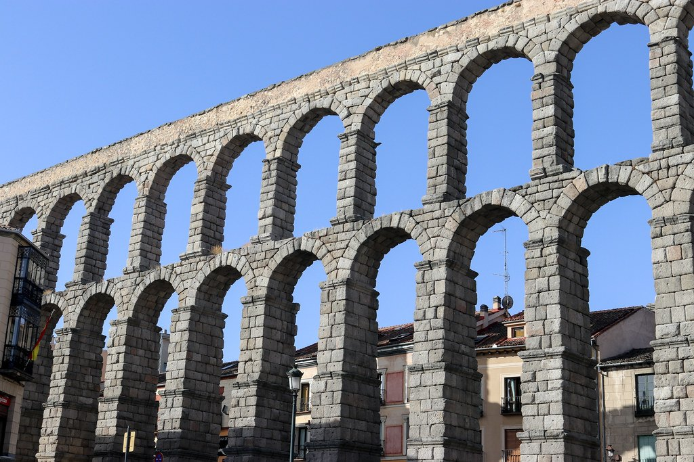
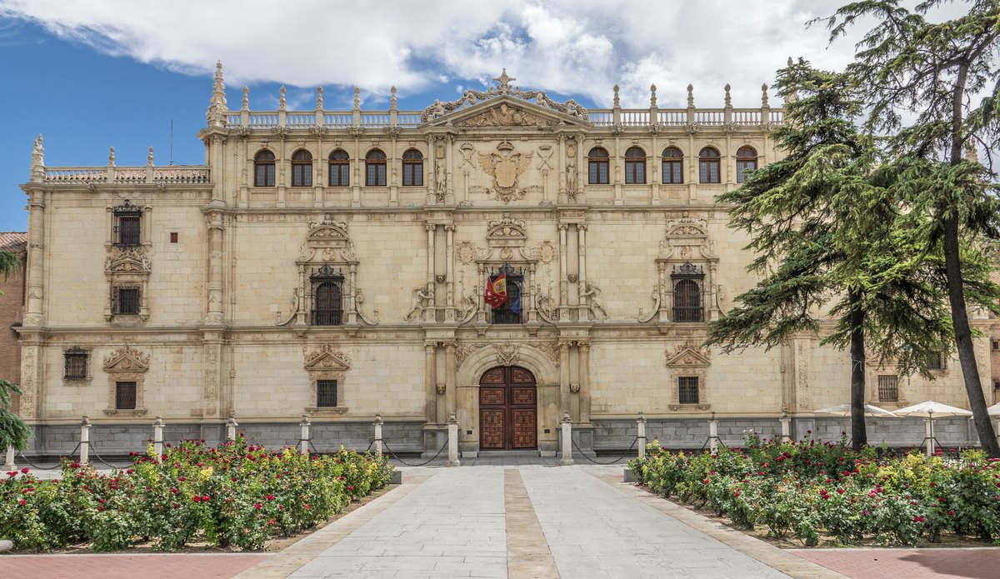
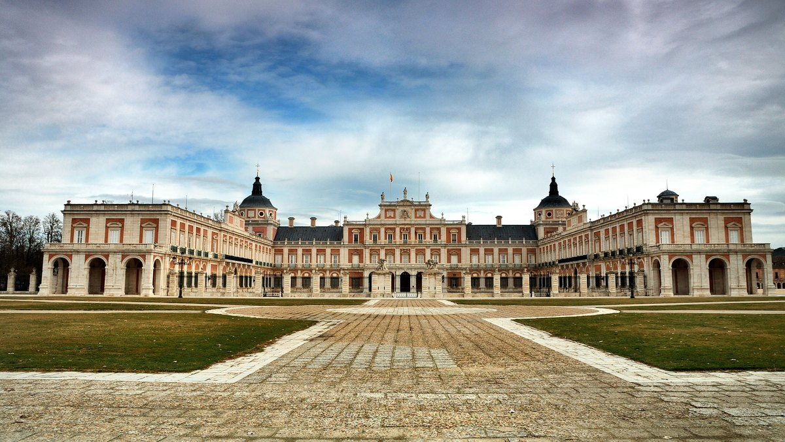
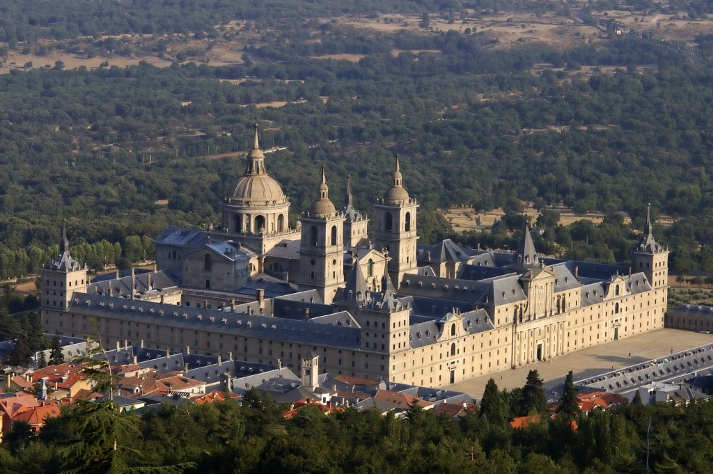
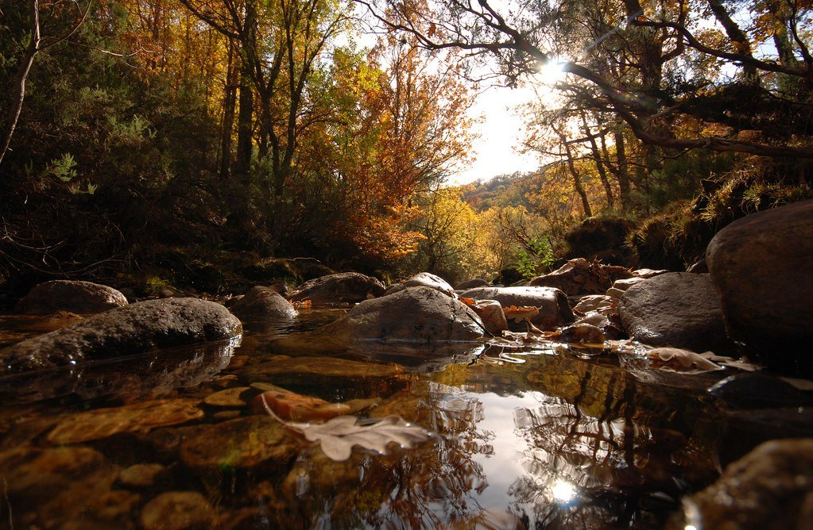

Museo Nacional del Prado
One of the world's greatest art museums, with masterpieces by Velázquez, Goya, El Greco, Titian and Bosch.
In the city
Madrid's Paseo del Arte gathers three world-class collections within a short walk, along the Paseo del Prado — a boulevard that, together with the Retiro gardens, was inscribed as a UNESCO World Heritage Site in 2021.

One of the world's greatest art museums, with masterpieces by Velázquez, Goya, El Greco, Titian and Bosch.

Spain's national museum of modern and contemporary art, home to Picasso's Guernica and major works by Dalí and Miró.

A remarkable collection spanning eight centuries of European painting, from the early Italian masters to Pop Art.
World Heritage
From the heart of the city to a short train ride or drive away, Madrid and its surroundings hold a remarkable concentration of UNESCO World Heritage Sites.

The Paseo del Prado boulevard and the Retiro gardens — a “landscape of arts and sciences” of museums, fountains and tree-lined avenues in the heart of the city.

The “city of three cultures”, layering Christian, Jewish and Muslim heritage above the Tagus gorge.

Crowned by a monumental Roman aqueduct, a Gothic cathedral and the fairy-tale Alcázar.

The world's first planned university city and the birthplace of Cervantes.

A royal cultural landscape of palaces, fountains and formal gardens along the Tagus.

Philip II's vast Renaissance monastery and royal palace in the Sierra de Guadarrama.

A rare, well-preserved southern beech wood, protected within the UNESCO Ancient and Primeval Beech Forests of Europe. Visited on guided tours only.